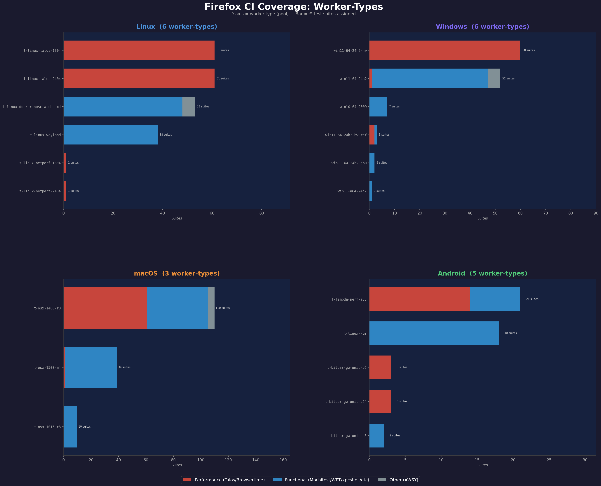
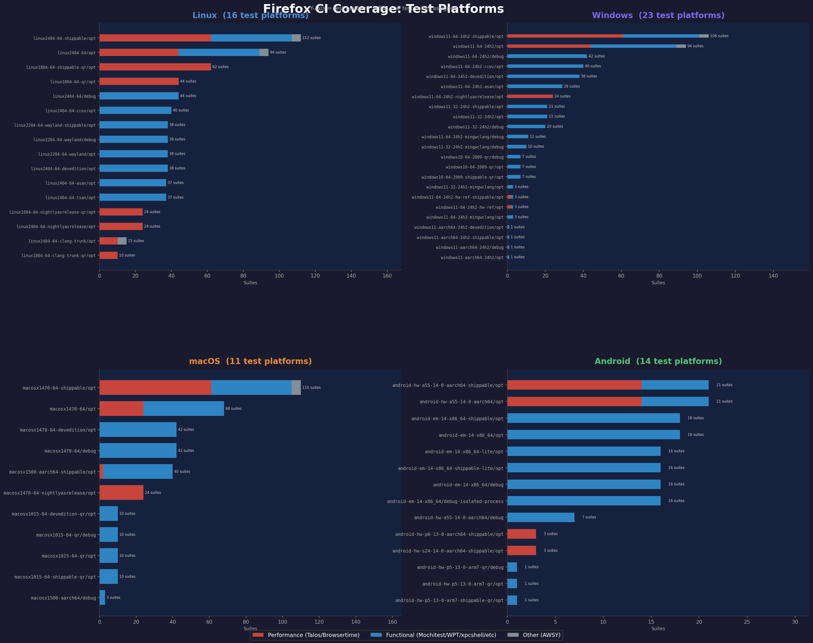
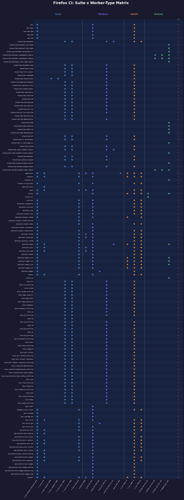
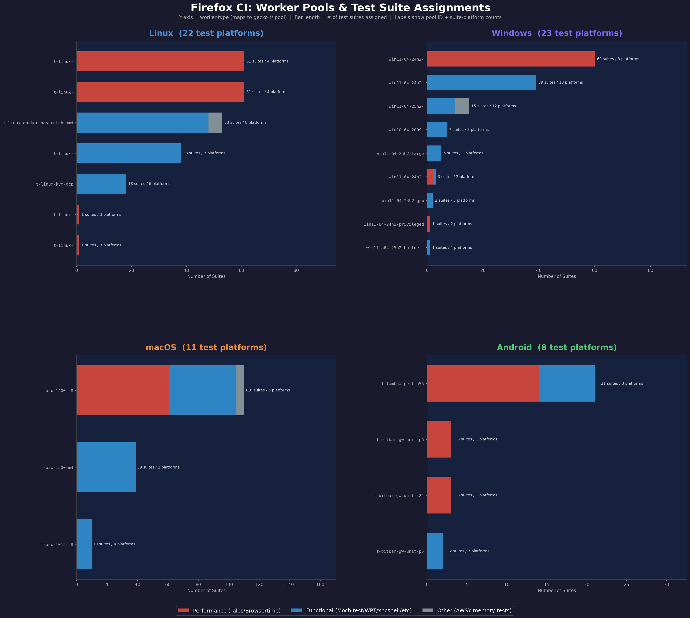

Dashboards
Suite Coverage Matrix
Interactive matrix showing which test suites run on which worker-types. Color-coded dots by OS family (Linux, Windows, macOS, Android). Grouped into performance, functional, and other sections.
Open DashboardTest-Level Skip Matrix
3,413 individual tests with skip-if conditions, grouped by suite. Shows skipped/total counts and percentages. Filter by name or show only tests skipped on all platforms.
Open DashboardSuite x Platform Tier Matrix
143 suites across 64 platforms showing tier classification (T1 must-pass, T2 secondary, T3 experimental). Grouped by OS family with sticky headers. Includes variant tier overrides.
Open DashboardDiagrams




About
This project parses Firefox's in-tree CI configuration (test-platforms.yml, test-sets.yml, worker.py routing logic) and fxci-config pool definitions to build a static coverage map. Phase 1 covers static config analysis. Phase 2 will integrate Treeherder API data for runtime test results.